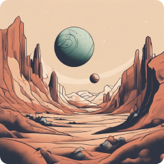
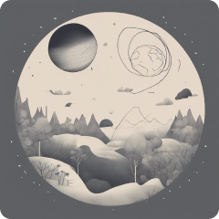
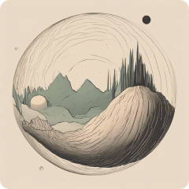
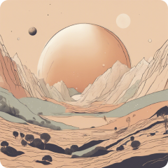
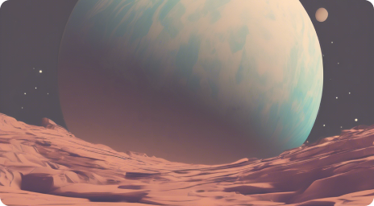

Search
Busca sobre el espacio
Destacado

Marte

Jupiter

Saturno

La Luna
Stream en vivo

Explorando Marte junto a la NASA
Unete a nosotros a ver los ultimos descubrimientos sobre el planeta rojo.
15 minutos restantes
Articulo

Porque las estrellas brillan
Lectura de 3 minutos

El misterio de Jupiter y su gran punto Rojo
Lectura de 4 minutos

Como se forman los agujeros negros?
Lectura de 5 minutos
Bienvenido a Astra Index
Tú guia cosmologica


Artículos
Live
Destacados
Explorar
Astra Index


See all

See all

See all